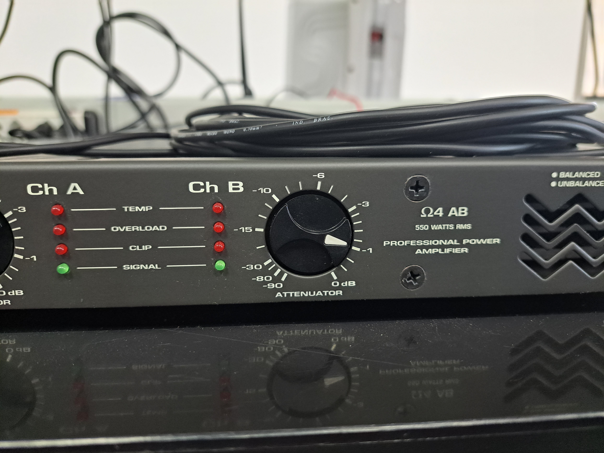
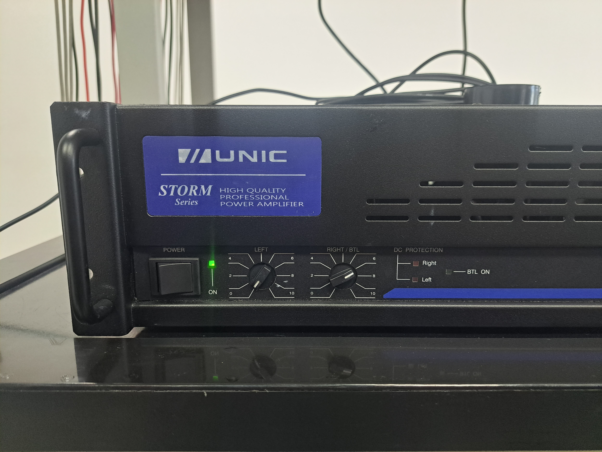
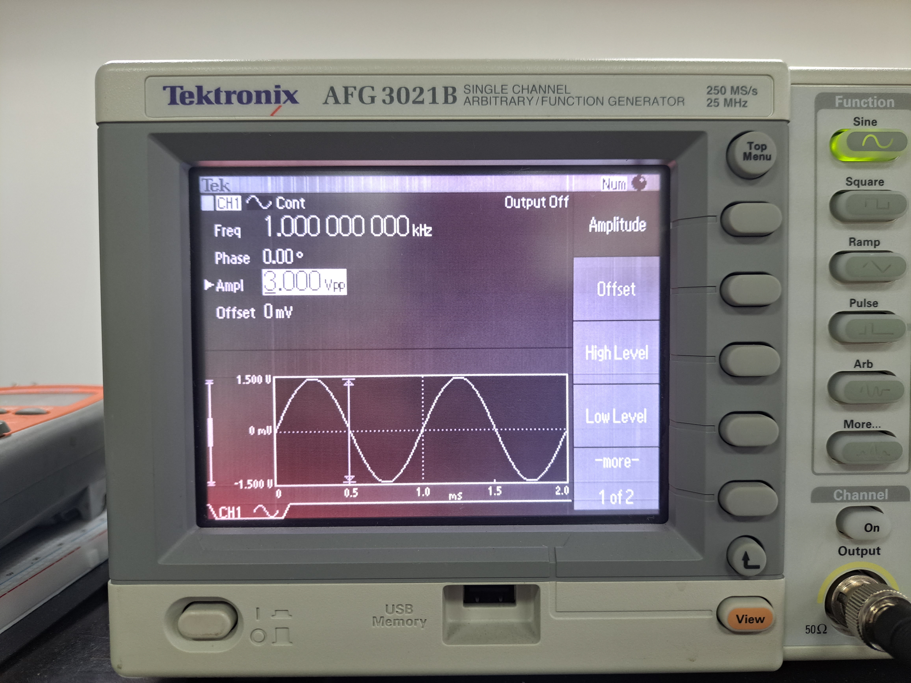


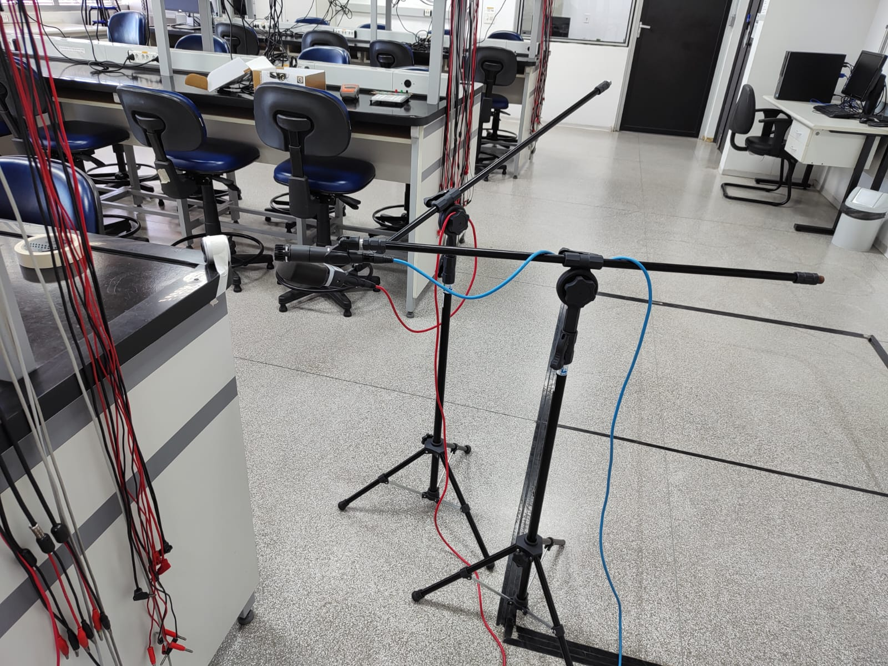 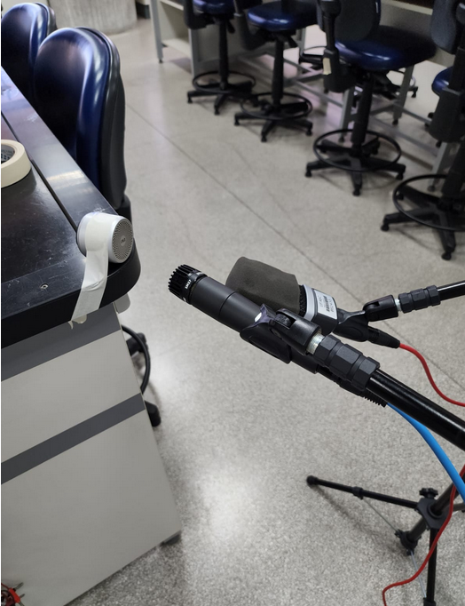
“Fishers of Men”, Rhonda Mitra
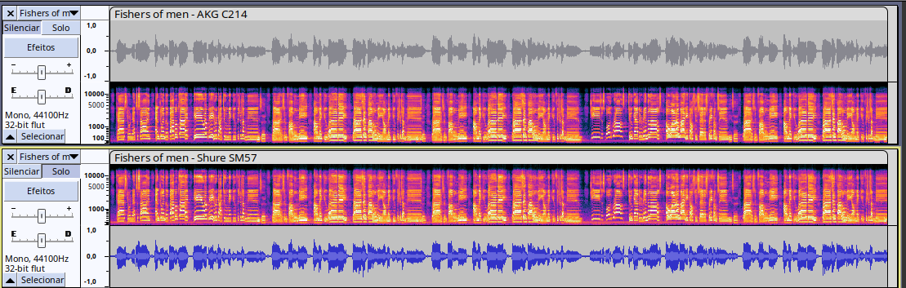
O que podemos perceber para esta música é que no microfone AKG C214 o som para os agudos ou para as vozes de cabeça é mais “fechado”, parece existir uma filtragem das frequências maiores ou tentativa de eliminação de eco artificialmente, o que tira um pouco a “beleza” de uma música a capella, enquanto no SM57, os agudos são mais abertos, melhorando a harmonia das vozes, no caso do cantor barítono, aparentemente seus graves e a voz de peito não mudaram muito (comparando os dois microfones).
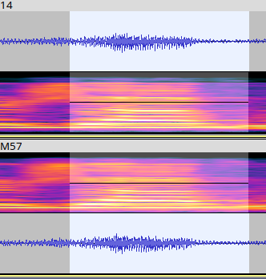
Comparando um pequeno trecho nos dois microfones, vemos uma pequena mudança na onda, aparentemente no microfone AKG, a duração de um pico é ligeiramente mais curta e aparentemente tem um filtro ali também, pode ser um dos motivos que nos leva a ter essa impressão de som fechado/abafado.
Bachianas Brasileiras nº 2, “O trenzinho caipira”
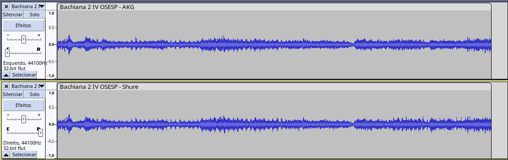
Podemos ver no trecho final da música que as amplitudes são diferentes:
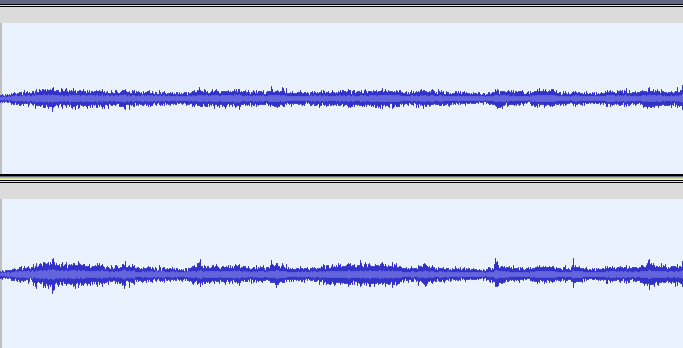
Nesse caso, o AKG parece dar uma sensação maior de preenchimento da música, diferente da primeira música, talvez para ouvir em um fone de ouvido, a gravação com o AKG seja melhor do que com o Shure.
“Take me Home, Country Roads”, The Petersens
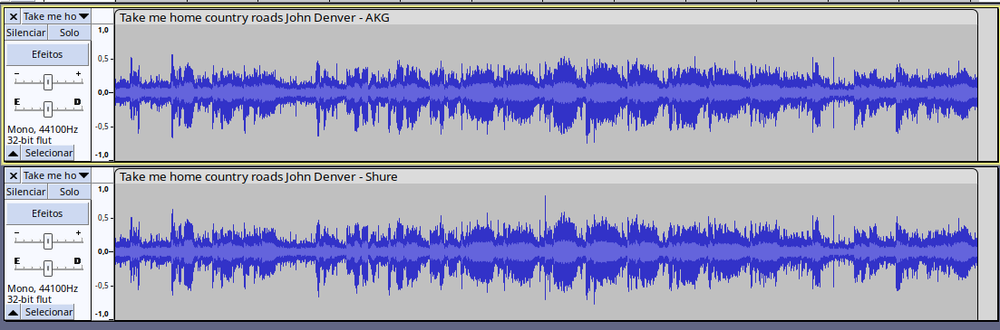
Neste caso, existe um chocalho e um pandeiro meia lua na música, os quais foram praticamente todos cortados pelo microfone AKG, mas ficou bem evidente no microfone Shure. O backing-vocal também foi comprometido na gravação com o AKG, mas esse também destacou melhor a voz principal.
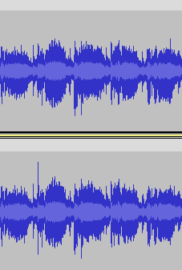
Acima podemos ver o filtro do AKG atuando de novo e um pequeno trecho da música.
Melhor eu Ir, Péricles 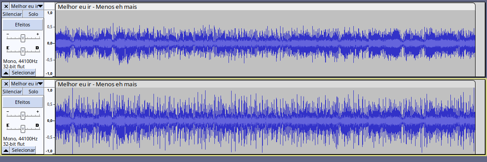
Essa música é interessante de se analisar pois existe mais de um cantor e diversos instrumentos de percussão e outros de corda, para uma voz mais grave o AKG pareceu melhor, para uma voz mais aguda, o Shure pareceu melhor, dessa vez, a percussão não foi totalmente afetada pela AKG, diferentemente na música “Country Roads…”.
Dynamite, BTS
Outro caso com dois momentos, até a primeira parte destacada abaixo, temos um som mais agradável no AKG (só voz e batida):
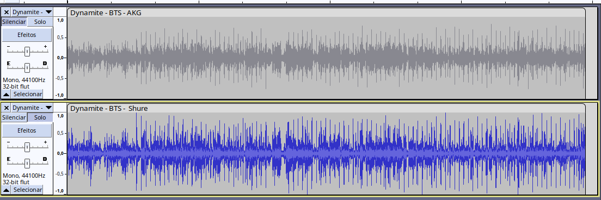
Após isso, o Shure parece mais interessante, pois no microfone AKG, o chimbal da bateria (que parece ser eletrônica), sumiu completamente, além de ser um pré-refrão + refrão com mais cantores cantando simultaneamente. Obs: Durante a gravação, um dos alunos entrou na sala falando, porém aparentemente nenhum dos dois microfones captou o áudio dele (provavelmente por ambos serem cardióides).
Eu sei, Pato Fu

Nesse caso, parece que o grave está estourando no microfone de cima (AKG), não parece uma gravação muito agradável para esse tipo de música, mesmo a cantora utilizando (aparentemente) mais voz de peito, o que não deveria ser um problema aí. A música no geral parece ter um “flicking” de ruído, não sei se é proposital, mas pode-se ouvir aí um sonzinho de estática ao fundo (em ambos os microfones).
Características dos microfones
Shure SM57:
Tipo de microfone: Dinâmico. Padrão polar: Cardióide. Resposta de frequência: 40 Hz a 15 kHz. Sensibilidade: -56,0 dBV/Pa (1,6 mV). Impedância: 150 ohms. SPL máximo: 94 dB (a 1 kHz, 1% de THD). Conexão: XLR (3 pinos). Construção resistente e durável, adequada para uso em palco e estúdio. Amplamente utilizado para captura de instrumentos musicais, amplificadores de guitarra, caixas de som, bateria e vocal ao vivo.
AKG C214:
Tipo de microfone: Condensador. Padrão polar: Cardióide. Resposta de frequência: 20 Hz a 20 kHz. Sensibilidade: 20 mV/Pa. Impedância: 200 ohms. SPL máximo: 136 dB (para 0,5% de THD). Conexão: XLR (3 pinos). Filtro de corte de graves e atenuação de pad integrados (-20 dB). Ideal para gravação em estúdio, instrumentos musicais, vocais, overheads de bateria e aplicações de captação profissional.
Isso leva a:
Resposta de frequência:
O Shure SM57 tem uma resposta de frequência mais limitada, com corte nas frequências mais altas. Isso pode resultar em um som mais suave e menos brilhante, o que pode ser preferido para certos instrumentos ou vocais. O AKG C214, com sua resposta de frequência estendida e mais linear, tende a capturar sons mais ricos e detalhados, especialmente nas frequências mais altas. Isso pode torná-lo uma escolha mais versátil para diferentes fontes sonoras.
Sensibilidade:
O Shure SM57 é menos sensível em termos de saída de sinal, o que pode ser vantajoso para situações em que é necessário controlar o nível de volume ou para instrumentos de alto SPL (Sound Pressure Level). O AKG C214, sendo um microfone condensador, é mais sensível e captura detalhes sutis de maneira mais eficaz. No entanto, pode ser necessário ajustar o ganho ou a posição do microfone para evitar distorções em fontes sonoras muito altas.
Padrão polar:
Ambos os microfones têm padrão polar cardióide, o que significa que têm uma sensibilidade direcional e minimizam a captação de sons vindos das laterais e traseira do microfone. Isso ajuda a reduzir o ruído ambiente e o vazamento de outras fontes sonoras próximas. No entanto, o posicionamento do microfone e a direção de captação podem ser mais críticos com o Shure SM57, devido à sua resposta de frequência mais limitada.
Uso em instrumentos e vocais:
O Shure SM57 é frequentemente usado para instrumentos musicais como amplificadores de guitarra, caixas de som, bateria, entre outros. Sua resposta de frequência suavizada pode ser vantajosa para capturar fontes sonoras mais agressivas. O AKG C214 é mais comumente usado para gravação de vocais, instrumentos acústicos, overheads de bateria e outras fontes sonoras onde detalhes e clareza são valorizados.
Considerando a pesquisa feita e a análise subjetiva do som, acho que tudo que percebemos bate com as especificações técnicas dos microfones, sentimos que o AKG se encaixou melhor para partes da música onde havia apenas voz e poucos instrumentos, e que ele também não era muito bom para percussão, já no caso do Shure, sons mais agudos, agressivos e harmonizações pareciam mais interessantes.